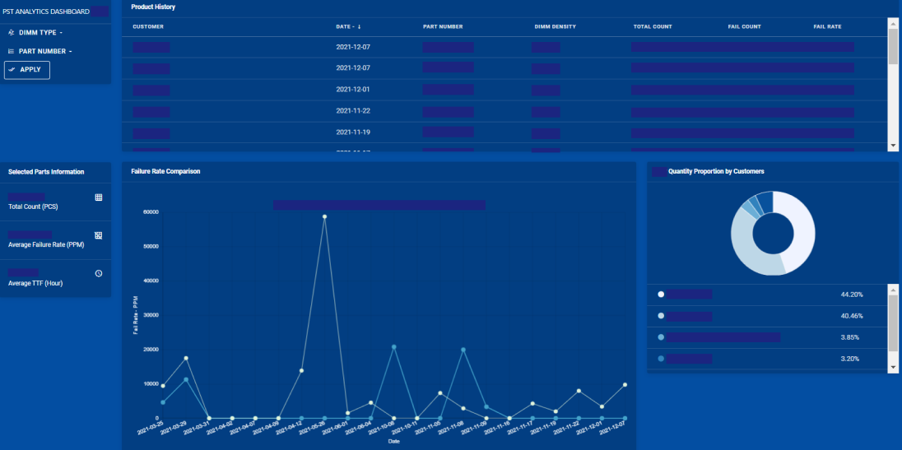
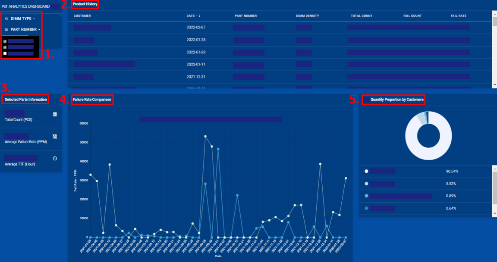
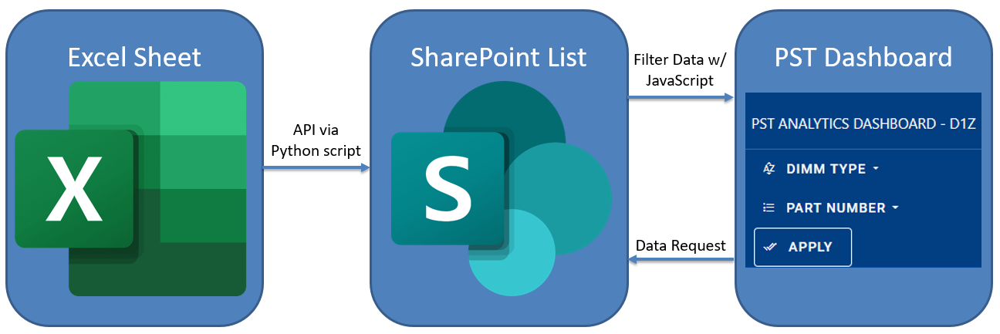

Samsung Semiconductor
The Problem
Lack of ownership of pre-screening test (PST) data halts effective communication with Samsung's customers.
The Solution
An internal data analytics tool that visualizes PST data
The Product
Pre-screening Test Data Analytics Dashboard
Intended User
Technical Account Managers & Application Engineers
Product Overview
PST dashboard automatically extracts PST data from Excel sheets, transfers data into MySQL database, and generates visualizations on Sharepoint.

Product Functionalities

1. DIMM Type/Part Number: Selection of product type (s)
2. Product History: Pre-screening test log by date for selected products
3. Selected Parts: Total count, failure rate, time to failure for selected products
4. Failure Rate Comparison: PST failure rate comparison for selected products
5. DIMM Quantity by Customers: Customer breakdown for selected products
Engineering Spec
Data Flow:

A Python script converts the entries from Excel sheets to a .db file. This .db file is then converted to a Sharepoint list using a mixture of the SOAP and REST APIs provided by Sharepoint.
Tech Stack:
Backend: Python
Database: SQLite
Frontend: Javascript, CSS, HTML
Libraries: Chart.js, jQuery, lxml
Impact
1. Increased product quality: With analyzed PST data, Samsung can provide product quality feedback to the chip design team.
2. Increased customer satisfaction: Ownership of analyzed PST data will decrease customer management turnaround time by three weeks.
© Built by Charles Oh 2023